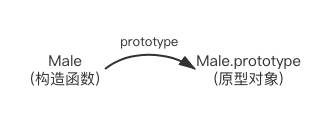
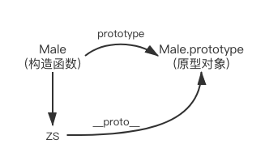
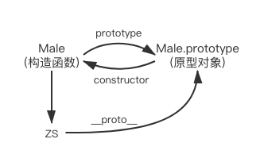
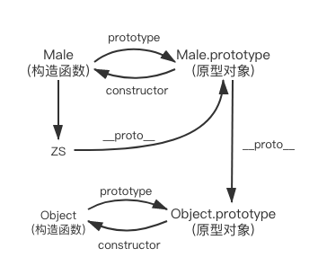
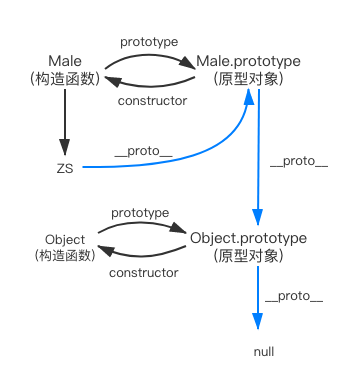

前言
JavaScript没有Class类的概念，是通过原型实现的继承。先看一下下面的代码:
1 | function Male(name){ |
原型
prototype
看第4行代码Male.prototype.sex = "男";，函数Male有个prototype对象属性，并且可以给其赋值。
Javascript中，每一个函数都有一个prototype对象属性，指向的是另一个对象，这个对象叫它原型对象。原型对象中的所有属性和方法，都会被构造函数的实例所继承，如sex属性。所以会把不变的属性和方法，放在原型对象中。
构造函数和原型对象之间的关系：

__proto__
打印ZS的时候，你会看到，它不仅仅只有name属性，还有__proto__属性。这是一个隐式属性
- 每一个对象(null除外)都会有这个属性
__proto__，它指向的是原型对象。 - 执行
ZS.__proto__相当于执行Object.getPrototypeOf(ZS)。
1 | console.log(ZS.__proto__ === Male.prototype); // true |
关系图如下：

constructor
- 每个原型都有
constructor属性，是指向对应的构造函数。
1 | console.log(Male.prototype.constructor === Male); // true |
关系图如下：

实例与原型
- 当读取实例的属性时，如果本身属性找不到，就会查找该对象相关联的原型中的属性。如果还查不到，再往原型的原型中找，一直找到最顶层为止。
如前言中的代码第9行，console.log(ZS.sex); // 男，可以打印出sex属性。
ZS对象中找不到sex属性，- 查找
ZS的原型ZS.__proto__的属性，查到了sex属性，返回。
等等。。。那如果ZS.__proto__也没有查到该属性，那ZS.__proto__的原型又是什么呢？
原型的原型
正如第3条所说的，每个对象都有原型。ZS.__proto__是一个对象，是通过构造函数Object创建的，那么ZS.__proto__的原型就是Object的原型对象。如下:
1 | console.log(ZS.__proto__.__proto__ === Object.prototype); // true |

原型链
Object.prototype原型也是一个对象，那它的原型其实是null。如下图:

除了null之外，对象都有原型，且对象的原型也是个对象，那么就有对象的原型的原型…一直到没有原型即null，正如上图中蓝色线条，就是一条原型链。
总结
- 对象都有原型(null除外)，原型是个对象
- 对象的proto指向对应的原型，原型的constructor指向对应的构造函数，构造函数的prototype指向对应实例的原型对象
- 读取对象的属性时，从本身属性到一层一层的原型往上找，直到null。找到了即返回，找不到返回undefined
小试牛刀
1 | ZS.__proto__ === Male.prototype // true |